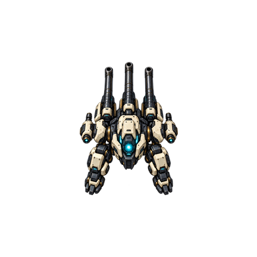
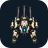
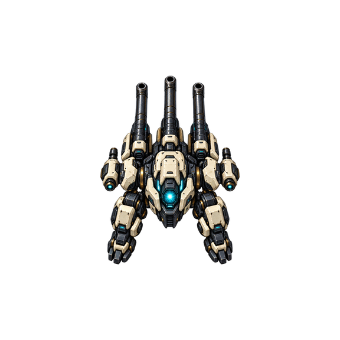

STAGE-02 · 原创候选
三管机甲启动资产
资源适配预览，非 Android 真机截图。产品名与美术尚待签收。
图标裁切与小尺寸

自适应前景完整落在 66dp 安全圆内。保留透明外沿，适配系统图标遮罩。

保留源图
白色装甲、石墨机械结构、青色核心。内置 imagegen 生成，密度导出由项目脚本执行。
系统启动主题示意

深色底与游戏菜单一致，使用系统 SplashScreen。没有人为等待或额外启动 Activity。
此处仅检查资产比例与颜色；启动闪屏、系统栏与过渡须在 Android 设备验收。